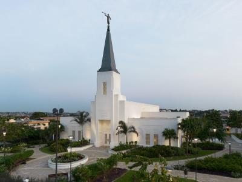

Abidjã, Costa do Marfim

O templo de Abidjã foi dedicado em 2018 e é o primeiro templo da A Igreja de Jesus Cristo dos Santos Últimos Dias na costa do Marfim
Sobre o Templo
O Templo de Abidjã, Costa do Marfim é o sétimo templo construído na África e o primeiro para a Costa do Marfim
Dedicado em Maio de 2025: Oração de Dedicação
Informações para Visitação
- Localização: Lot 118 Riviora Attaban Cocady Abidjan Cóta d'Ivoire
- Horário: Verifique a programação de ordenanças
- Telefone: +225 25 22 0 10010
- Acomodações: Disponível